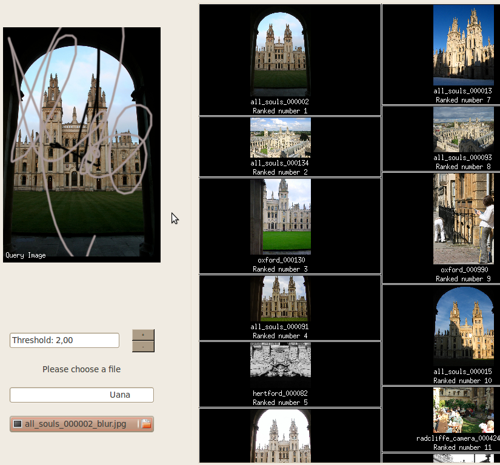
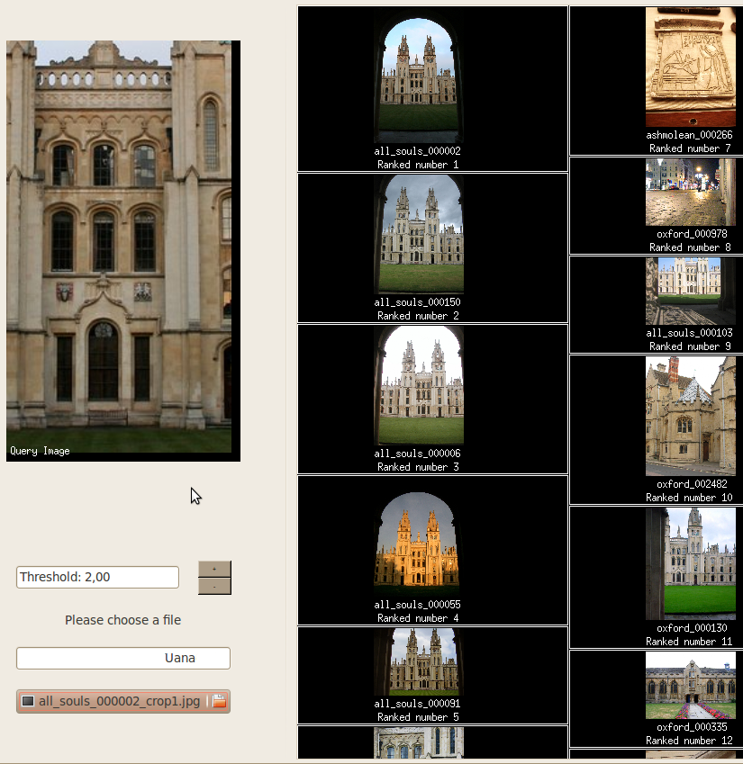
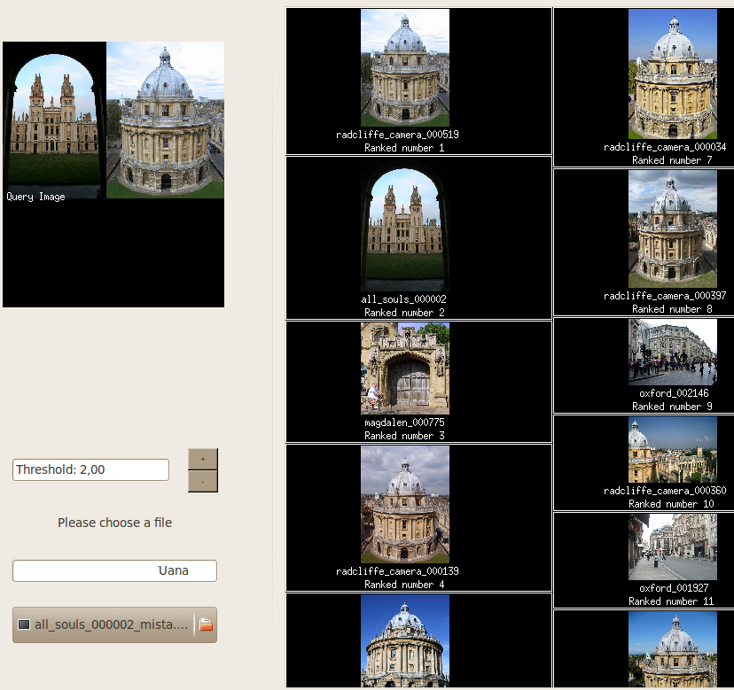

Uaná Tecnologia em Visão e Linguagem
São Paulo, SP, Brasil
uanatech@gmail.com
Sistema de Recuperação de Images | |
|---|---|
| A seguir estão alguns exemplos de resultados (screenshots) do nosso protótipo de recuperação de imagens. Esses resultsdos foram obtidos com uma base de imagens de 5062 fotografias obtidas da Oxford Buildings dataset. Nos exemplos a seguir, o usuário forneceu para o sistema imagens severamente alteradas e mesmo assim o sistema foi capaz de localizar fotografias originais do mesmo local. | |
|
Busca usando imagem rabiscada Busca com um pequeno recorte da imagem original Busca usando uma colagem de duas imagens  |
|---|
Missão
Promover e desenvolver tecnologia de ponta para capacitar nossos clientes a se tornarem líderes em seus negócios.
Promover e desenvolver tecnologia de ponta para capacitar nossos clientes a se tornarem líderes em seus negócios.